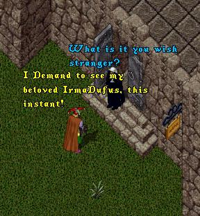
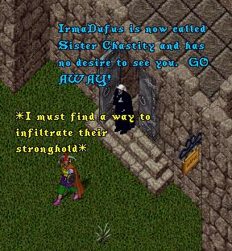
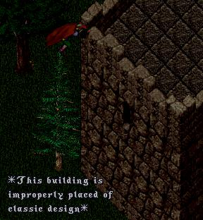
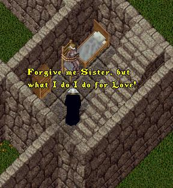
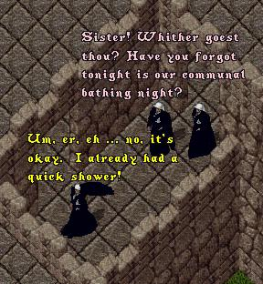
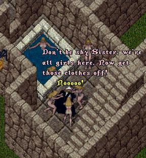
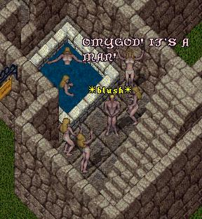
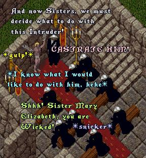

As this episode opens, ImaNewbie has once again
journeyed to the Convent of the Sisterhood of
Knoghmornuchiforyough to see if he can at least
speak with Irma, tell her he is a changed man,
and beg for her to come back to him.
 |
 |
Devising a plan to infiltrate their stronghold,
ImaNewbie waits until nightfall, then helped by the
fact that improper placement of the convent has
resulted in a tree being right next to the convent
wall, ImaNewbie climbs the tree and sneaks inside.
 |
Once inside, Ima realizes that his maleness, not to
mention his outfit, will quickly give him away. He
sneaks into one of the bedchambers, overpowers
one of the sisters, and dons her nun's habit.
 |
Feeling that his disguise is complete,
ImaNewbie walks brazenly down the corridors,
searching for Irma, when all of a sudden two
sisters, mistaking him for one of their order,
remind him/her that his/her attendance is
required at one of their weekly rituals.
 |
Though he protests, the Sisters will have
none of it and he is quickly dragged
bodily down to the bathing area.
 |
 |
Discovering that a Male person has
infiltrated their bastion of womanhood,
the Sisters take ImaNewbie to the main
meeting hall, where he is shackled to
the wall as the Sisters ponder his fate.
 |